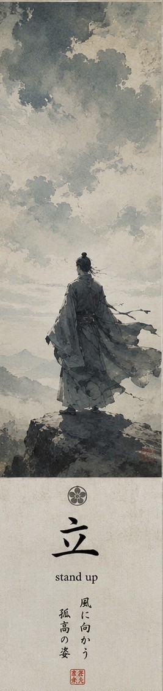
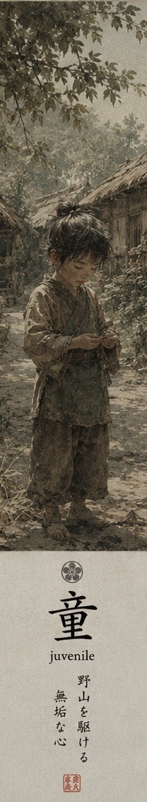
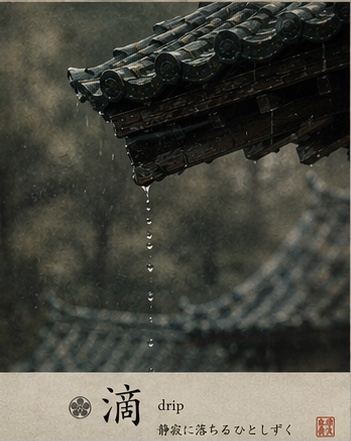
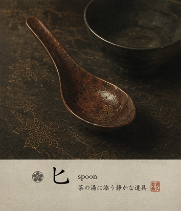
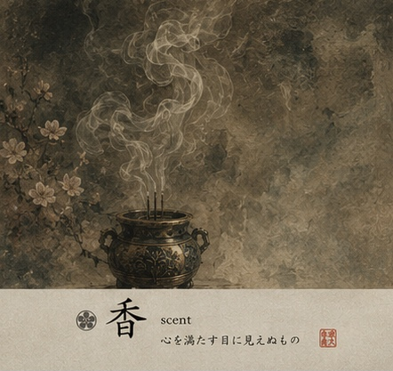
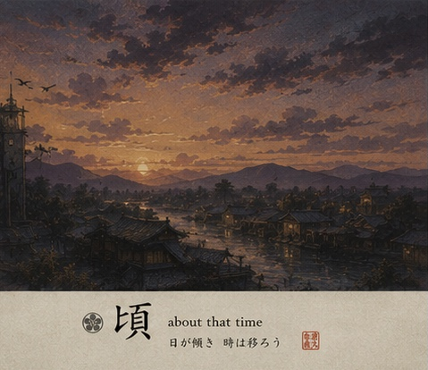

💡 Tip: Click the featured kanji to view stroke order animations

霧の橋
静かに渡る
朝の道
A bridge in mist
crossed without hurry
into the morning

雅の袖
言葉より先に
風が舞う
Elegant sleeves
before words are spoken
the wind already speaks

空の下
ただ立つだけで
道となる
Beneath the sky
simply standing still
becomes a path

雨の灯
声にならない
夜が落ちる
Rain and lanterns
a voice that cannot form
falls into night

紙重ね
静かな時を
綴じてゆく
Layered papers
binding together
quiet moments of time

旗揺れて
争わぬまま
風競う
Banners trembling
without open conflict
the winds compete

空高く
誰も触れえぬ
古き座
High beneath heaven
an ancient throne
none may reach

香の煙
執着だけが
遠ざかる
Incense drifting
only attachment
moves farther away

泥の道
小さな歌を
口ずさむ
Along muddy roads
a small child quietly
hums to himself
空映す
静かな瞳に
雲流る
The sky reflected
inside a quiet pupil
clouds continue on

夕の鐘
山の霧へと
響き消ゆ
An evening bell
echoing outward
into mountain mist

灯の市
人と人とを
結びゆく
Lantern market
binding person to person
through exchange
深き袖
家を静かに
受け継ぎぬ
Within layered robes
the house is quietly
carried onward

石の庭
乱れぬ道に
風も合う
Stone garden paths
even the passing wind
moves in harmony

雨しずく
古き屋根より
時落ちる
Raindrops falling
from the ancient temple roof
time itself descends

見えぬ影
遠き静けさ
刃は抜かず
An unseen shadow
within distant stillness
no blade is drawn

茶の湯気に
静かな木匙
夜ぬくむ
In rising tea steam
a quiet wooden spoon
warms the evening

厳しさも
愛の形と
子は知らず
Even stern words
are sometimes the shape
of love unseen

花ひらき
名もなき記憶
風に立つ
Flowers opening
nameless memories rise
upon the wind

日が傾き
語らぬものが
空に残る
As daylight fades
the unspoken things remain
within the sky